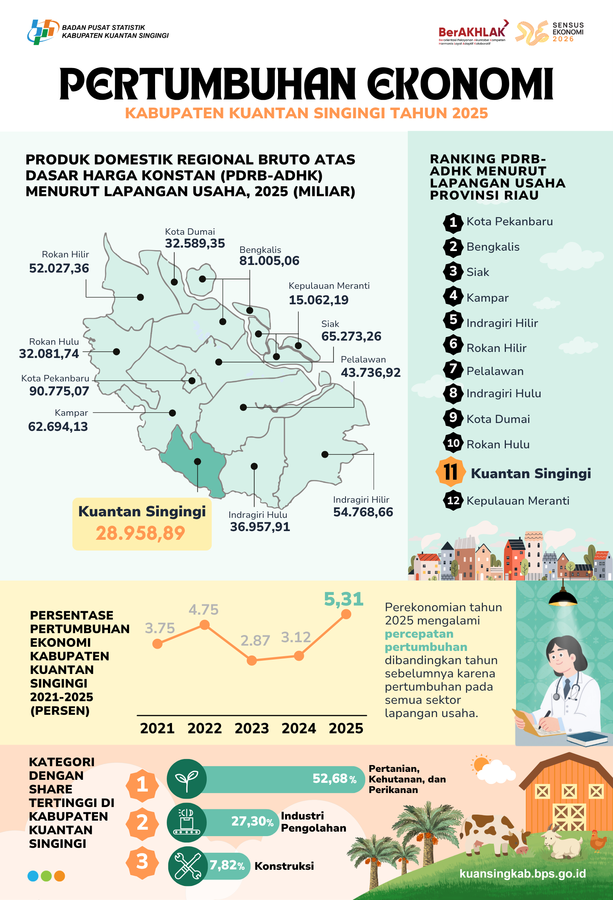
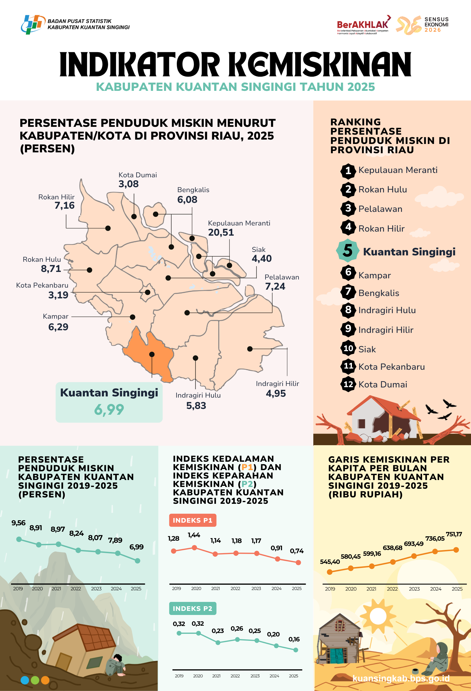
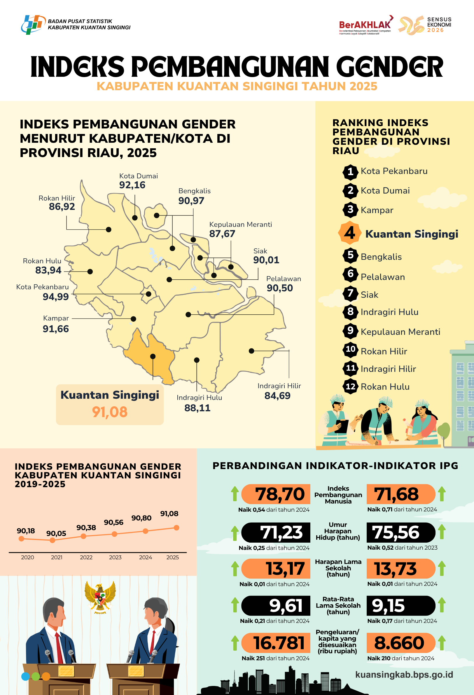

📊 SEKILAS WILAYAH & LAYANAN · BPS KUANTAN SINGINGI
Menyediakan Data Statistik Berkualitas untuk Bumi Pacu Jalur
BPS Kabupaten Kuantan Singingi berperan sebagai penyedia data statistik dasar dan pembina statistik sektoral di seluruh wilayah Kuantan Singingi guna mendukung perencanaan pembangunan daerah yang akurat dan berbasis bukti.
15Kecamatan Cakupan Pendataan
229Desa / Kelurahan Wilayah Tugas
BerAKHLAKNilai Dasar Pelayanan Publik
15 Kecamatan Wilayah Kerja BPS Kabupaten Kuantan Singingi
Kuantan MudikHulu KuantanGunung ToarPucuk Rantau
SingingiSingingi HilirKuantan TengahSentajo Raya
BenaiPangeanLogas Tanah DaratKuantan Hilir
Kuantan Hilir SeberangCerentiInuman
🏛️ Layanan Publik & Kegiatan Strategis
01Pelayanan Statistik Terpadu (PST): Konsultasi data, rekomendasi kegiatan statistik, dan akses publikasi gratis bagi masyarakat & instansi.
02Survei Sosial & Ekonomi Rutin: Sakernas, Susenas, Seruti, Survei Harga/NTP, Industri (IMK), serta penyusunan PDRB Kabupaten Kuantan Singingi.
03Pembinaan Desa Cantik & Statistik Sektoral: Pendampingan tata kelola data desa dan evaluasi penyelenggaraan statistik sektoral daerah (EPSS).
📈 INFOGRAFIS INDIKATOR MAKRO KABUPATEN KUANTAN SINGINGI
Sumber: BPS Kabupaten Kuantan Singingi · kuansingkab.bps.go.id
Pertumbuhan Ekonomi 20255,31% · PDRB 28.958,89 M

Indikator Kemiskinan 20256,99% · Turun dari 7,89%

Indeks Pembangunan Gender 202591,08 · Peringkat 4 Riau
🏆 CAPAIAN PRESTASI BPS KABUPATEN KUANTAN SINGINGI · 16 PENGHARGAAN SE-PROVINSI RIAU
Tayang Otomatis · 5 Detik Per Slide🎬 TAYANGAN VIDEO BPS KABUPATEN KUANTAN SINGINGI
Profil & Publikasi Video · BPS Kab. Kuantan Singingi VIDEO TAYANGAN UTAMA
File Video Belum Ditemukan
Simpan file video Anda dengan nama
video.mp4 di folder yang sama dengan file HTML ini.